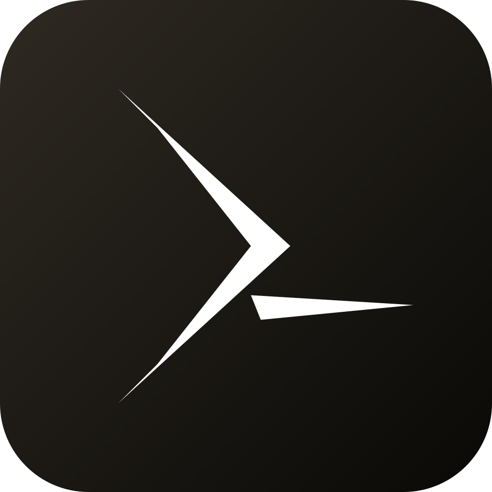
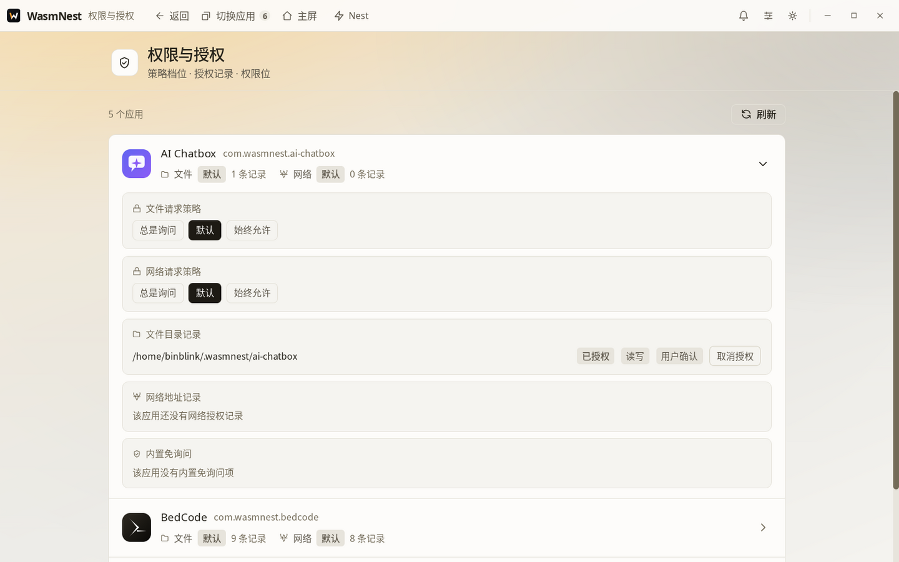
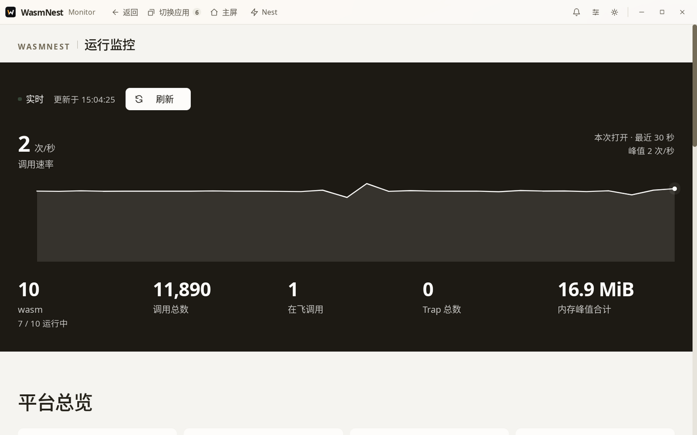
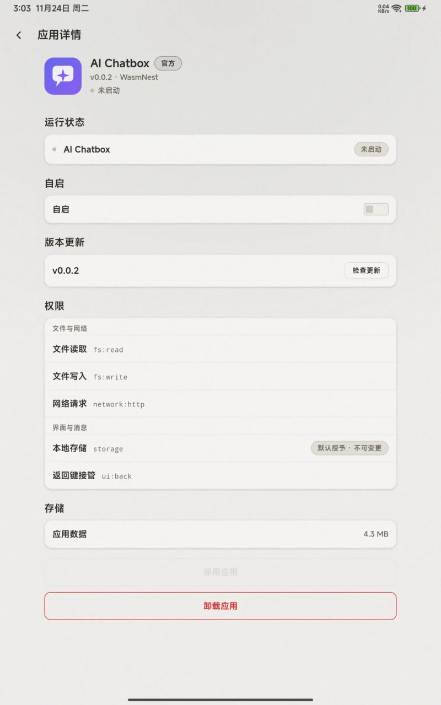

默认零能力
每个应用是一个独立的 wasm Component，跑在独立的 wasmtime 实例里。文件、网络、PTY 都要显式导入并经批准；应用失控，影响半径停在自己的实例内。
0.0.2 Alpha · 四仓开源 · MIT
双端 Wasm 应用宿主 —— 能力即权限，宿主保持极简。
宿主只提供运行时、安全闸门与装配机制。会话、终端、AI、文件传输……每个产品能力都是一个独立构建的 wasm 应用，写一次，桌面与 Android 都能装载。
Windows · Linux · Androidv0.0.2
01四仓协作
四个平级仓库各管一层，默认按同场目录摆放；跨仓版本由 release-manifest.json 钉住。宿主装配引擎，应用只依赖契约。
02为什么不一样
宿主不承载业务，也不替应用做决定。它只负责运行、隔离、授权与装配——把复杂度留在契约上，而不是留在安装包里。
每个应用是一个独立的 wasm Component，跑在独立的 wasmtime 实例里。文件、网络、PTY 都要显式导入并经批准；应用失控，影响半径停在自己的实例内。
生效权限 = plugin.json 声明 ∩ 用户批准。高风险能力按域拆分、逐项开关；权限页保留按应用的访问记录。
桌面按 mountApp 契约把独立前端包挂进同一窗口；移动注册为宿主壳运行面。WIT 与 SDK 双端共享，应用写一次。
宿主与应用只通过 WIT 接口对话，不共享源码。Rust、Go、C/C++、JavaScript……只要能产出 wasm Component，就能进巢。
新增、更新、停用应用都不需要重发宿主。切走只是藏起来；停用或卸载是唯一销毁点。
四仓版本由 release-manifest.json 钉住，WIT 指纹与清单一致性都有锁；契约漂移当场报错，而不是静默降级。
03机制
应用只通过 WIT 与宿主对话，不共享源码。一次装配，跨两端复用；装载、更新、停用与卸载都不改动宿主。
每个应用跑在独立的 wasmtime 48 实例。宿主提供 PTY、文件、HTTP、WS、对等网络、认证与加密等通用原语，全部按权限开放。
出站网络过 egress，文件访问过授权，前端调用过 ACL / CSP。三条闸门站在应用与系统之间。
桌面把前端包挂进同一 webview，移动把每个应用建成独立 Vue 运行面。宿主只认契约，不认产品。

BedCode AI Chatbox File Transfer Monitor Auth Center

同一契约 · 两端装载
移动宿主把每个应用注册为独立 Vue 运行面，权限、存储与生命周期沿用同一套 wasm 应用模型。桌面与移动不是两套代码，而是同一份产物形态的两种装配。

04应用与服务
业务应用与系统服务同构：独立构建、独立版本、独立发布。桌面与移动产物分开提供；标为「随宿主提供」的应用不单独发 zip。
终端会话中心：会话配置与生命周期编排、任务队列与 Agent 集成；移动端作为远程终端控制端。
多供应商 AI 对话：流式输出、多会话管理，接入任意 OpenAI 兼容供应商。
内网对端发现与双向文件传输：并发队列、暂停 / 恢复、断点续传与共享目录。
轻量级 Markdown 记事本：纯文本编辑 + 实时预览、自动保存、系统剪贴板集成。
个人新闻聚合：按源与圈子汇集 24 小时内的信息条。
只读查看所有已加载 wasm 应用的内存、调用、燃料、Trap 与授权指标，并提供平台总览与阈值预警。
本机入站连接的唯一裁决者（fail-closed）：配对、信任与认证策略经互调 API 提供给消费方。
穿透配置的跨应用唯一真源：中继地址导入、按插件的外网注册表与部署文本生成。
本地 whisper.cpp 离线识别，或 OpenAI 兼容远端转写；只接收音频字节。
系统级个人助手：情感陪伴对话 + 应用调度执行，本地加密存储记忆与密钥。
全部应用发布记录与校验文件见 wasmnest-apps Releases。桌面在应用管理里选择 zip 安装；移动从文件安装。
05下载
安装包由 GitHub Releases 直接分发。每个文件都附 SHA-256，桌面安装包另带 minisign 更新签名。
Windows 安装包目前未做 Authenticode 代码签名，SmartScreen 可能提示「未知发布者」；Android APK 使用 release keystore 签名；macOS / iOS 未纳入发布验证。
06SDK
端内 SDK 已在 npm 与 crates.io 发布（0.0.2，MIT）。前端负责挂载与运行面，Rust 负责 wasm Component 与类型安全的插件 API。
类型定义、运行时代理、Vite 构建插件与 CLI。桌面与移动各一个包，脚手架可直接生成工程。
pnpm add -D @binblink/wasmnest-plugin-sdk-desktop@0.0.2
pnpm add -D @binblink/wasmnest-plugin-sdk-mobile@0.0.2
插件 API trait 与共享类型，启用 wasm feature 后获得 wit-bindgen 绑定、WasmPlugin 与互调宏。
cargo add wasmnest-plugin-api@0.0.2 --features wasm
cargo add wasmnest-plugin-api-mobile@0.0.2 --features wasm
{
"id": "com.example.my-app",
"name": "My App",
"version": "0.1.0",
"platform": "desktop",
"pluginType": "full",
"main": "index.js",
"permissions": ["storage", "network:http"],
"rustLibrary": "my_app_plugin"
}07从源码
项目处于研发起步期。从源码构建需要 Node 22、pnpm 12.2.1、Rust stable 与 sccache；桌面应用构建另需 wasip3 nightly，移动端另需 Android SDK / NDK。
mkdir wasmnest-workspace && cd wasmnest-workspace
git clone https://github.com/7ZAI/wasmnest.git
git clone https://github.com/7ZAI/wasmnest-lib.git
git clone https://github.com/7ZAI/wasmnest-apps.git
git clone https://github.com/7ZAI/wasmnest-test.git
cd wasmnest
pnpm install
pnpm --dir wasmnest-desktop install
pnpm --dir wasmnest-mobile install
pnpm --dir wasmnest-desktop run tauri:dev首次构建内置应用前，按 wasmnest-apps 的说明安装各应用工程依赖。
Tauri 2 负责窗口、系统集成与安装包；WasmNest 在它之上提供 wasmtime 运行时、能力闸门与应用的装载 / 卸载机制。Tauri 插件不是 wasm 应用。
为了隔离与可替换：每个应用是独立 Component，默认零系统能力，只能使用被批准的导入；宿主无需为每个应用重编，应用也可以来自不同语言。
内置应用随安装包分发；桌面可在应用管理里选择 zip 安装，移动从文件安装。独立发布的应用包从 wasmnest-apps Releases 下载。
当前发布验证覆盖 Windows、Linux 与 Android arm64；macOS / iOS 尚未纳入发布验证。
每个资产旁边有 .sha256，部分带 .sig。桌面 .sig 是 minisign 更新签名；Windows 目前未做 Authenticode 代码签名，SmartScreen 可能提示未知发布者。Android APK 使用 release keystore 签名。
可以。两个 SDK 均为 MIT，CLI 可生成桌面 / 移动工程，plugin.json 声明权限。当前没有应用商店审核机制，分发即 zip 或应用包。